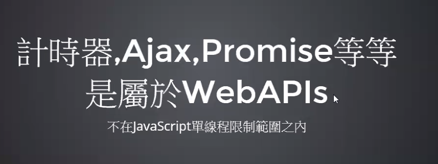
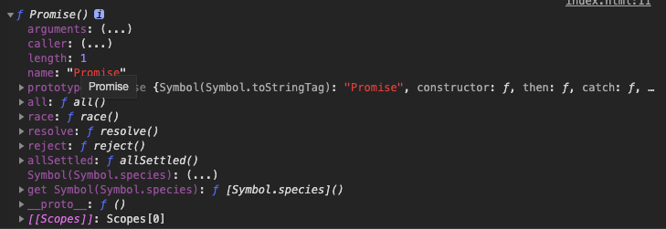
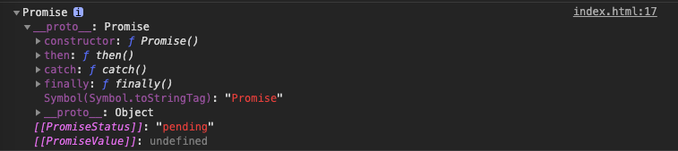
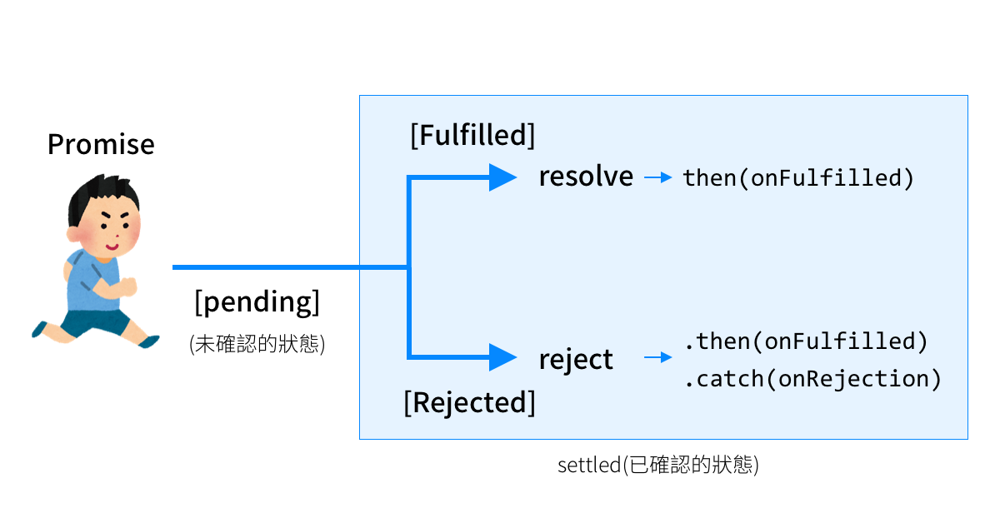
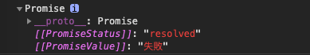
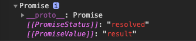
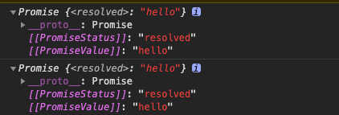

<!DOCTYPE html>
<html lang="zh-TW">
<head>
  <meta charset="UTF-8">
<meta name="viewport" content="width=device-width, initial-scale=1, maximum-scale=2">
<meta name="theme-color" content="#222">
<meta name="generator" content="Hexo 4.2.0">
  <link rel="apple-touch-icon" sizes="180x180" href="/images/apple-touch-icon-next.png">
  <link rel="icon" type="image/png" sizes="32x32" href="/images/favicon-32x32-next.png">
  <link rel="icon" type="image/png" sizes="16x16" href="/images/favicon-16x16-next.png">
  <link rel="mask-icon" href="/images/logo.svg" color="#222">

<link rel="stylesheet" href="/css/main.css">

<link rel="stylesheet" href="//fonts.googleapis.com/css?family=Noto Serif SC:300,300italic,400,400italic,700,700italic|Roboto Mono:300,300italic,400,400italic,700,700italic&display=swap&subset=latin,latin-ext">
<link rel="stylesheet" href="/lib/font-awesome/css/font-awesome.min.css">

<script id="hexo-configurations">
    var NexT = window.NexT || {};
    var CONFIG = {"hostname":"fan630.github.io","root":"/","scheme":"Pisces","version":"7.7.2","exturl":false,"sidebar":{"position":"right","display":"post","padding":18,"offset":12,"onmobile":false},"copycode":{"enable":true,"show_result":true,"style":"flat"},"back2top":{"enable":true,"sidebar":false,"scrollpercent":true},"bookmark":{"enable":true,"color":"#222","save":"auto"},"fancybox":false,"mediumzoom":false,"lazyload":false,"pangu":false,"comments":{"style":"tabs","active":null,"storage":true,"lazyload":false,"nav":null},"algolia":{"hits":{"per_page":10},"labels":{"input_placeholder":"Search for Posts","hits_empty":"We didn't find any results for the search: ${query}","hits_stats":"${hits} results found in ${time} ms"}},"localsearch":{"enable":true,"trigger":"auto","top_n_per_article":1,"unescape":false,"preload":false},"motion":{"enable":true,"async":false,"transition":{"post_block":"fadeIn","post_header":"slideDownIn","post_body":"slideDownIn","coll_header":"slideLeftIn","sidebar":"slideUpIn"}},"path":"search.json"};
  </script>

  <meta name="description" content="第一次看到promise的實戰, 是出現在口罩地圖的示範碼, 當時老師透過promise載入兩個ajax. 自己之前也有寫了一篇文章在講相關的概念, 但是覺得還是沒有掌握好.">
<meta property="og:type" content="article">
<meta property="og:title" content="一次搞懂Promise">
<meta property="og:url" content="http://fan630.github.io/uncategorized/2020/02/20/Promise-you-need-to-know/index.html">
<meta property="og:site_name" content="擴充海馬迴的百寶箱">
<meta property="og:description" content="第一次看到promise的實戰, 是出現在口罩地圖的示範碼, 當時老師透過promise載入兩個ajax. 自己之前也有寫了一篇文章在講相關的概念, 但是覺得還是沒有掌握好.">
<meta property="og:locale" content="zh_TW">
<meta property="og:image" content="https://images.unsplash.com/photo-1550063873-ab792950096b?ixlib=rb-1.2.1&ixid=eyJhcHBfaWQiOjEyMDd9&auto=format&fit=crop&w=400&q=80">
<meta property="og:image" content="http://fan630.github.io/uncategorized/2020/02/20/Promise-you-need-to-know/webAPI.png">
<meta property="og:image" content="http://fan630.github.io/uncategorized/2020/02/20/Promise-you-need-to-know/promise.png">
<meta property="og:image" content="http://fan630.github.io/uncategorized/2020/02/20/Promise-you-need-to-know/new_promise.png">
<meta property="og:image" content="http://fan630.github.io/uncategorized/2020/02/20/Promise-you-need-to-know/img-promise-pending.png">
<meta property="og:image" content="http://fan630.github.io/uncategorized/2020/02/20/Promise-you-need-to-know/resolve_fail.png">
<meta property="og:image" content="http://fan630.github.io/uncategorized/2020/02/20/Promise-you-need-to-know/Promise_resolve.png">
<meta property="og:image" content="http://fan630.github.io/uncategorized/2020/02/20/Promise-you-need-to-know/async.png">
<meta property="article:published_time" content="2020-02-20T05:30:55.000Z">
<meta property="article:modified_time" content="2020-07-09T06:31:51.106Z">
<meta property="article:author" content="Norris">
<meta property="article:tag" content="javascript">
<meta name="twitter:card" content="summary">
<meta name="twitter:image" content="https://images.unsplash.com/photo-1550063873-ab792950096b?ixlib=rb-1.2.1&ixid=eyJhcHBfaWQiOjEyMDd9&auto=format&fit=crop&w=400&q=80">

<link rel="canonical" href="http://fan630.github.io/uncategorized/2020/02/20/Promise-you-need-to-know/">


<script id="page-configurations">
  // https://hexo.io/docs/variables.html
  CONFIG.page = {
    sidebar: "",
    isHome : false,
    isPost : true
  };
</script>

  <title>一次搞懂Promise | 擴充海馬迴的百寶箱</title>
  


  <noscript>
  <style>
  .use-motion .brand,
  .use-motion .menu-item,
  .sidebar-inner,
  .use-motion .post-block,
  .use-motion .pagination,
  .use-motion .comments,
  .use-motion .post-header,
  .use-motion .post-body,
  .use-motion .collection-header { opacity: initial; }

  .use-motion .site-title,
  .use-motion .site-subtitle {
    opacity: initial;
    top: initial;
  }

  .use-motion .logo-line-before i { left: initial; }
  .use-motion .logo-line-after i { right: initial; }
  </style>
</noscript>

</head>

<body itemscope itemtype="http://schema.org/WebPage">
  <div class="container use-motion">
    <div class="headband"></div>

    <header class="header" itemscope itemtype="http://schema.org/WPHeader">
      <div class="header-inner"><div class="site-brand-container">
  <div class="site-nav-toggle">
    <div class="toggle" aria-label="切換導航欄">
      <span class="toggle-line toggle-line-first"></span>
      <span class="toggle-line toggle-line-middle"></span>
      <span class="toggle-line toggle-line-last"></span>
    </div>
  </div>

  <div class="site-meta">

    <div>
      <a href="/" class="brand" rel="start">
        <span class="logo-line-before"><i></i></span>
        <span class="site-title">擴充海馬迴的百寶箱</span>
        <span class="logo-line-after"><i></i></span>
      </a>
    </div>
        <p class="site-subtitle">屒型人</p>
  </div>

  <div class="site-nav-right">
    <div class="toggle popup-trigger">
        <i class="fa fa-search fa-fw fa-lg"></i>
    </div>
  </div>
</div>


<nav class="site-nav">
  
  <ul id="menu" class="menu">
        <li class="menu-item menu-item-home">

    <a href="/" rel="section"><i class="fa fa-fw fa-home"></i>首頁</a>

  </li>
        <li class="menu-item menu-item-tags">

    <a href="/tags/" rel="section"><i class="fa fa-fw fa-tags"></i>標籤</a>

  </li>
        <li class="menu-item menu-item-categories">

    <a href="/categories/" rel="section"><i class="fa fa-fw fa-th"></i>分類</a>

  </li>
        <li class="menu-item menu-item-archives">

    <a href="/archives/" rel="section"><i class="fa fa-fw fa-archive"></i>歸檔</a>

  </li>
      <li class="menu-item menu-item-search">
        <a role="button" class="popup-trigger"><i class="fa fa-search fa-fw"></i>搜尋
        </a>
      </li>
  </ul>

</nav>
  <div class="site-search">
    <div class="popup search-popup">
    <div class="search-header">
  <span class="search-icon">
    <i class="fa fa-search"></i>
  </span>
  <div class="search-input-container">
    <input autocomplete="off" autocorrect="off" autocapitalize="off"
           placeholder="搜尋..." spellcheck="false"
           type="search" class="search-input">
  </div>
  <span class="popup-btn-close">
    <i class="fa fa-times-circle"></i>
  </span>
</div>
<div id="search-result"></div>

</div>
<div class="search-pop-overlay"></div>

  </div>
</div>
    </header>

    
  <div class="back-to-top">
    <i class="fa fa-arrow-up"></i>
    <span>0%</span>
  </div>
  <div class="reading-progress-bar"></div>
  <a role="button" class="book-mark-link book-mark-link-fixed"></a>


    <main class="main">
      <div class="main-inner">
        <div class="content-wrap">
          

          <div class="content">
            

  <div class="posts-expand">
      
  
  
  <article itemscope itemtype="http://schema.org/Article" class="post-block " lang="zh-TW">
    <link itemprop="mainEntityOfPage" href="http://fan630.github.io/uncategorized/2020/02/20/Promise-you-need-to-know/">

    <span hidden itemprop="author" itemscope itemtype="http://schema.org/Person">
      <meta itemprop="image" content="/images/avatar.gif">
      <meta itemprop="name" content="Norris">
      <meta itemprop="description" content="每天都要進步一點點">
    </span>

    <span hidden itemprop="publisher" itemscope itemtype="http://schema.org/Organization">
      <meta itemprop="name" content="擴充海馬迴的百寶箱">
    </span>
      <header class="post-header">
        <h1 class="post-title" itemprop="name headline">
          一次搞懂Promise
        </h1>

        <div class="post-meta">
            <span class="post-meta-item">
              <span class="post-meta-item-icon">
                <i class="fa fa-calendar-o"></i>
              </span>
              <span class="post-meta-item-text">發表於</span>

              <time title="創建時間：2020-02-20 13:30:55" itemprop="dateCreated datePublished" datetime="2020-02-20T13:30:55+08:00">2020-02-20</time>
            </span>
              <span class="post-meta-item">
                <span class="post-meta-item-icon">
                  <i class="fa fa-calendar-check-o"></i>
                </span>
                <span class="post-meta-item-text">更新於</span>
                <time title="修改時間：2020-07-09 14:31:51" itemprop="dateModified" datetime="2020-07-09T14:31:51+08:00">2020-07-09</time>
              </span>

          
  
  <span class="post-meta-item">
    
      <span class="post-meta-item-icon">
        <i class="fa fa-comment-o"></i>
      </span>
      <span class="post-meta-item-text">Disqus：</span>
    
    <a title="disqus" href="/uncategorized/2020/02/20/Promise-you-need-to-know/#disqus_thread" itemprop="discussionUrl">
      <span class="post-comments-count disqus-comment-count" data-disqus-identifier="uncategorized/2020/02/20/Promise-you-need-to-know/" itemprop="commentCount"></span>
    </a>
  </span>
  
  

        </div>
      </header>

    
    
    
    <div class="post-body" itemprop="articleBody">

      
        <p></p>
<p>第一次看到promise的實戰, 是出現在口罩地圖的示範碼, 當時老師透過promise載入兩個ajax. 自己之前也有寫了一篇文章在講相關的概念, 但是覺得還是沒有掌握好.</p>
<a id="more"></a>
<p>知道什麼時候要用是一回事, 但是怎麼用又是一回事, 還有就是為什麼要用? 所以寫了這篇文章, 希望能徹底了解Promise, async, await. </p>
<p>（此篇文章是以筆者的理解加以撰寫,所以基礎觀念很多都跳過, 不適合基礎者閱讀)</p>
<h2 id="JS的運作原理"><a href="#JS的運作原理" class="headerlink" title="JS的運作原理"></a>JS的運作原理</h2><p>JS本身是單執行緒, 也就是一次只能處理一件事的語言,  但程式要處理的事情很多, 單執行緒不太夠用啊, 怎麼辦?</p>
<blockquote>
<p><em>那就要給優先順序</em></p>
</blockquote>
<p>JS機制是會把非同步事件移動到最後面執行<br>哪些是非同步事件呢? </p>
<p></p>
<h2 id="名詞解釋"><a href="#名詞解釋" class="headerlink" title="名詞解釋"></a>名詞解釋</h2><p>簡單了解了JS運作原理, 不免俗的先來個名詞解釋.</p>
<h3 id="Ajax"><a href="#Ajax" class="headerlink" title="Ajax"></a>Ajax</h3><p>是一個技術名稱  ⇒ 取得遠端資料的非同步行為</p>
<p>為什麼是<em>非同步</em>?<br>問這問題先假設如果是同步, 而遠端的資料又多又雜,又要先處理的話, 那整個程式都卡在那</p>
<p>以最近最夯的買酒精為例: </p>
<p>原本要結帳的沒辦法結帳, 如果先等排隊買酒精的人都結帳完, 才處理後面的結帳, 那這樣是一件沒有效率的事情. </p>
<p>那怎麼辦?  </p>
<p>先處理結帳的客戶, 買酒精的人繼續排隊. 等到後面結帳的人都沒人了, 再來處理酒精的結帳. </p>
<h3 id="Promise"><a href="#Promise" class="headerlink" title="Promise"></a>Promise</h3><p>是一個語法 ⇒ 處理非同步行為<br>為什麼要用 ⇒ 因為要有一個標準化的介面<br>白話一點: 透過Promise管理ajax行為, Promise是用來改善 JavaScript 非同步的語法。</p>
<p>再白話一點: 我要怎麼管理排隊的人潮拉?</p>
<h3 id="Promise-與-Async、Await-有什麼關係？"><a href="#Promise-與-Async、Await-有什麼關係？" class="headerlink" title="Promise 與 Async、Await 有什麼關係？"></a>Promise 與 Async、Await 有什麼關係？</h3><p>Async、Await 可以基於 Promise 讓非同步的語法的結構類似於 “同步語言”，更易讀且好管理。</p>
<p>白話一點: 優化promise的孿生兄弟<br>再白話一點: 比原本Promise方法更好的作法</p>
<h2 id="Promise-的結構及狀態"><a href="#Promise-的結構及狀態" class="headerlink" title="Promise 的結構及狀態"></a>Promise 的結構及狀態</h2><h3 id="原生調用"><a href="#原生調用" class="headerlink" title="原生調用"></a>原生調用</h3><p>那如果console.dir(Promise) 會出現什麼呢?</p>
<p></p>
<p>Promise 本身是一個建構函式，函式也是屬於物件的一種，因此可以附加其它屬性方法在上，透過 console 的結果可以看到 Promise 可以直接使用 all、race、resolve、reject 的方法</p>
<ul>
<li>Promise.all</li>
<li>Promise.race</li>
<li>Promise.resolve</li>
<li>Promise.reject</li>
</ul>
<p>(若想了解用法, 可以直接參考段落Promise方法)</p>
<hr>
<p>Promise 建構函式的同時，必須傳入一組函式作為參數，此函式的參數包含<code>resolve</code>, <code>reject</code>，這兩個方法分別代表成功與失敗的回傳結果，特別注意<strong>這兩個僅能回傳其中之一</strong>，且<strong>必定只能回傳一次</strong>。<strong>回傳後表示此 Promise 事件結束</strong></p>
<h3 id="建構函式-new-調用"><a href="#建構函式-new-調用" class="headerlink" title="建構函式 new 調用"></a>建構函式 new 調用</h3><p>先來看兩種調用的方法</p>
<figure class="highlight javascript"><table><tr><td class="gutter"><pre><span class="line">1</span><br><span class="line">2</span><br><span class="line">3</span><br><span class="line">4</span><br><span class="line">5</span><br><span class="line">6</span><br><span class="line">7</span><br><span class="line">8</span><br><span class="line">9</span><br><span class="line">10</span><br><span class="line">11</span><br><span class="line">12</span><br><span class="line">13</span><br><span class="line">14</span><br></pre></td><td class="code"><pre><span class="line"><span class="comment">// 在函數裡面的寫法</span></span><br><span class="line"><span class="keyword">const</span> promise2 = <span class="function"><span class="params">()</span> =&gt;</span> &#123;</span><br><span class="line">    <span class="keyword">return</span> <span class="keyword">new</span> <span class="built_in">Promise</span>(<span class="function">(<span class="params">resolve, reject</span>) =&gt;</span> &#123;</span><br><span class="line"></span><br><span class="line">    &#125;)</span><br><span class="line">&#125;</span><br><span class="line"></span><br><span class="line"><span class="built_in">console</span>.dir(promise2())</span><br><span class="line"></span><br><span class="line"><span class="comment">// 一般調用</span></span><br><span class="line"><span class="keyword">const</span> p = <span class="keyword">new</span> <span class="built_in">Promise</span>(<span class="function">(<span class="params">resolve, reject</span>)=&gt;</span> &#123;</span><br><span class="line">&#125;)</span><br><span class="line"></span><br><span class="line"><span class="built_in">console</span>.dir(p)</span><br></pre></td></tr></table></figure>

<p>那如果console.dir(p) 會出現什麼呢?</p>
<p></p>
<p>Promise 建構函式 new 出的物件，則可以使用其中的原型方法, （在 prototype 內，其中就包含 then、catch、finally，這些方法則必須在新產生的物件下才能呼叫。</p>
<ul>
<li>p.then()    =&gt; Promise 回傳正確</li>
<li>p.catch()   =&gt; Promise 回傳失敗</li>
<li>p.finally()   =&gt; 非同步執行完畢</li>
</ul>
<h2 id="狀態"><a href="#狀態" class="headerlink" title="狀態"></a>狀態</h2><p>在 Promise 的執行函式中，可以看到以下兩個屬性：</p>
<ul>
<li><em>[[PromiseStatus]]</em>: <code>&quot;pending&quot;</code> -&gt; 表示目前的進度狀態</li>
<li><em>[[PromiseValue]]</em>: <code>undefined</code> -&gt; 表示 <code>resolve</code> 或 <code>reject</code> 回傳的值</li>
</ul>
<p></p>
<p>Promise 中會使用 resolve 或 reject 回傳結果，並在調用時使用 then 或 catch 取得值。</p>
<h3 id="更改狀態看看"><a href="#更改狀態看看" class="headerlink" title="更改狀態看看"></a>更改狀態看看</h3><figure class="highlight javascript"><table><tr><td class="gutter"><pre><span class="line">1</span><br><span class="line">2</span><br><span class="line">3</span><br><span class="line">4</span><br><span class="line">5</span><br><span class="line">6</span><br><span class="line">7</span><br></pre></td><td class="code"><pre><span class="line"><span class="keyword">const</span> promise2 = <span class="function"><span class="params">()</span> =&gt;</span> &#123;</span><br><span class="line">      <span class="keyword">return</span> <span class="keyword">new</span> <span class="built_in">Promise</span>(<span class="function">(<span class="params">resolve, reject</span>) =&gt;</span> &#123;</span><br><span class="line">          resolve(<span class="string">'失敗'</span>);</span><br><span class="line">      &#125;)</span><br><span class="line">  &#125;</span><br><span class="line"></span><br><span class="line"><span class="built_in">console</span>.dir(promise2())</span><br></pre></td></tr></table></figure>
<p></p>
<h3 id="then-vs-catch-舉例"><a href="#then-vs-catch-舉例" class="headerlink" title="then vs catch 舉例"></a>then vs catch 舉例</h3><p>上列的三種狀態每次執行必定會經過 Pending，接下來進入 Fulfilled 或 Rejected 的其中之一，並且可以使用 then() 及 catch() 取得成功或失敗的結果。</p>
<figure class="highlight javascript"><table><tr><td class="gutter"><pre><span class="line">1</span><br><span class="line">2</span><br><span class="line">3</span><br><span class="line">4</span><br><span class="line">5</span><br><span class="line">6</span><br><span class="line">7</span><br><span class="line">8</span><br><span class="line">9</span><br><span class="line">10</span><br></pre></td><td class="code"><pre><span class="line"><span class="keyword">let</span> a = <span class="keyword">new</span> <span class="built_in">Promise</span>(<span class="function"><span class="keyword">function</span> (<span class="params">resolve, reject</span>) </span>&#123;</span><br><span class="line">	<span class="comment">// 這一步只是改變PromiseValue, 但還不能調用</span></span><br><span class="line">    resolve(<span class="number">3</span>)</span><br><span class="line">&#125;)</span><br><span class="line"></span><br><span class="line">a.then(<span class="function"><span class="keyword">function</span> (<span class="params">result</span>) </span>&#123;</span><br><span class="line">    <span class="built_in">console</span>.log(result); <span class="comment">//3</span></span><br><span class="line">&#125;).catch(<span class="function"><span class="keyword">function</span>(<span class="params">result</span>)</span>&#123;</span><br><span class="line">    <span class="built_in">console</span>.log(<span class="string">'失敗'</span>)</span><br><span class="line">&#125;)</span><br></pre></td></tr></table></figure>

<p><strong>Promise 另一個特點在於 then、catch 都可以使用鏈接的方式不斷的進行下一個任務.</strong></p>
<h2 id="實例來一下"><a href="#實例來一下" class="headerlink" title="實例來一下"></a>實例來一下</h2><p>筆者這邊有找到一個很好的範例來解釋</p>
<ul>
<li>為什麼要用?</li>
<li>怎麼用? 知道有這個武器是理所當然, 但是什麼時候要把這武器叫出來? </li>
</ul>
<p>首先我要可以印出A ⇒ B ⇒ C的順序</p>
<h3 id="無法確定callback回傳的順序"><a href="#無法確定callback回傳的順序" class="headerlink" title="無法確定callback回傳的順序"></a>無法確定callback回傳的順序</h3><figure class="highlight javascript"><table><tr><td class="gutter"><pre><span class="line">1</span><br><span class="line">2</span><br><span class="line">3</span><br><span class="line">4</span><br><span class="line">5</span><br><span class="line">6</span><br><span class="line">7</span><br><span class="line">8</span><br><span class="line">9</span><br><span class="line">10</span><br><span class="line">11</span><br><span class="line">12</span><br><span class="line">13</span><br><span class="line">14</span><br></pre></td><td class="code"><pre><span class="line"><span class="function"><span class="keyword">function</span> <span class="title">logWord</span>(<span class="params">word</span>)</span>&#123;</span><br><span class="line">    setTimeout(<span class="function"><span class="keyword">function</span>(<span class="params"></span>) </span>&#123;</span><br><span class="line">        <span class="built_in">console</span>.log(word)</span><br><span class="line">    &#125;, <span class="built_in">Math</span>.floor(<span class="built_in">Math</span>.random() * <span class="number">100</span>) + <span class="number">1</span></span><br><span class="line">    <span class="comment">// return value between 1 ~ 100</span></span><br><span class="line">    )</span><br><span class="line">&#125;</span><br><span class="line"></span><br><span class="line"><span class="function"><span class="keyword">function</span> <span class="title">logAll</span>(<span class="params"></span>)</span>&#123;</span><br><span class="line">    logWord(<span class="string">"A"</span>)</span><br><span class="line">    logWord(<span class="string">"B"</span>)</span><br><span class="line">    logWord(<span class="string">"C"</span>)</span><br><span class="line">&#125;</span><br><span class="line">logAll()</span><br></pre></td></tr></table></figure>

<h3 id="改成callback"><a href="#改成callback" class="headerlink" title="改成callback"></a>改成callback</h3><figure class="highlight javascript"><table><tr><td class="gutter"><pre><span class="line">1</span><br><span class="line">2</span><br><span class="line">3</span><br><span class="line">4</span><br><span class="line">5</span><br><span class="line">6</span><br><span class="line">7</span><br><span class="line">8</span><br><span class="line">9</span><br><span class="line">10</span><br><span class="line">11</span><br><span class="line">12</span><br><span class="line">13</span><br><span class="line">14</span><br><span class="line">15</span><br><span class="line">16</span><br></pre></td><td class="code"><pre><span class="line"><span class="function"><span class="keyword">function</span> <span class="title">logWord</span>(<span class="params">word, callback</span>) </span>&#123;</span><br><span class="line">    setTimeout(<span class="function"><span class="keyword">function</span>(<span class="params"></span>) </span>&#123;</span><br><span class="line">        <span class="built_in">console</span>.log(word)</span><br><span class="line">        callback()</span><br><span class="line">    &#125;), <span class="built_in">Math</span>.floor(<span class="built_in">Math</span>.random() * <span class="number">100</span>) + <span class="number">1</span></span><br><span class="line">&#125;</span><br><span class="line"></span><br><span class="line"><span class="function"><span class="keyword">function</span> <span class="title">logAll</span>(<span class="params"></span>)</span>&#123;</span><br><span class="line">    logWord(<span class="string">"A"</span>, <span class="function"><span class="keyword">function</span>(<span class="params"></span>) </span>&#123;</span><br><span class="line">        logWord(<span class="string">"B"</span>, <span class="function"><span class="keyword">function</span>(<span class="params"></span>) </span>&#123;</span><br><span class="line">            logWord(<span class="string">"C"</span>, <span class="function"><span class="keyword">function</span>(<span class="params"></span>) </span>&#123;&#125;)</span><br><span class="line">        &#125;)</span><br><span class="line">    &#125;)</span><br><span class="line">&#125;</span><br><span class="line"><span class="comment">// Callback Hell</span></span><br><span class="line">logAll()</span><br></pre></td></tr></table></figure>
<h3 id="改成Promise"><a href="#改成Promise" class="headerlink" title="改成Promise"></a>改成Promise</h3><p>簡單來說就是在非同步事件上在外面包裝一層</p>
<figure class="highlight javascript"><table><tr><td class="gutter"><pre><span class="line">1</span><br><span class="line">2</span><br><span class="line">3</span><br><span class="line">4</span><br><span class="line">5</span><br><span class="line">6</span><br><span class="line">7</span><br><span class="line">8</span><br><span class="line">9</span><br><span class="line">10</span><br><span class="line">11</span><br><span class="line">12</span><br><span class="line">13</span><br><span class="line">14</span><br><span class="line">15</span><br><span class="line">16</span><br><span class="line">17</span><br><span class="line">18</span><br></pre></td><td class="code"><pre><span class="line"><span class="function"><span class="keyword">function</span> <span class="title">logWord</span>(<span class="params">word</span>)</span>&#123;</span><br><span class="line">    <span class="keyword">return</span> <span class="keyword">new</span> <span class="built_in">Promise</span>(<span class="function">(<span class="params">resolve, reject</span>) =&gt;</span> &#123;</span><br><span class="line">            setTimeout(<span class="function"><span class="params">()</span> =&gt;</span> &#123;</span><br><span class="line">                resolve()</span><br><span class="line">                <span class="built_in">console</span>.log(word)</span><br><span class="line">            &#125;, <span class="built_in">Math</span>.random()*<span class="number">100</span> + <span class="number">1</span>);</span><br><span class="line">        &#125;)</span><br><span class="line">&#125;</span><br><span class="line"></span><br><span class="line"><span class="function"><span class="keyword">function</span> <span class="title">logAll</span>(<span class="params"></span>)</span>&#123;</span><br><span class="line">    logWord(<span class="string">'C'</span>)</span><br><span class="line">        <span class="comment">// 這是省略return的寫法</span></span><br><span class="line">        .then(<span class="function"><span class="params">success</span> =&gt;</span> logWord(<span class="string">'B'</span>))</span><br><span class="line">        .then(<span class="function"><span class="params">success</span> =&gt;</span> logWord(<span class="string">'A'</span>))</span><br><span class="line">&#125;</span><br><span class="line"></span><br><span class="line"></span><br><span class="line">logAll() <span class="comment">// 有順序性的的處理  C =&gt; B =&gt; A</span></span><br></pre></td></tr></table></figure>

<h3 id="改成Async-amp-Await-寫法"><a href="#改成Async-amp-Await-寫法" class="headerlink" title="改成Async &amp; Await 寫法"></a>改成Async &amp; Await 寫法</h3><figure class="highlight javascript"><table><tr><td class="gutter"><pre><span class="line">1</span><br><span class="line">2</span><br><span class="line">3</span><br><span class="line">4</span><br><span class="line">5</span><br><span class="line">6</span><br><span class="line">7</span><br><span class="line">8</span><br><span class="line">9</span><br><span class="line">10</span><br><span class="line">11</span><br><span class="line">12</span><br><span class="line">13</span><br><span class="line">14</span><br><span class="line">15</span><br><span class="line">16</span><br><span class="line">17</span><br></pre></td><td class="code"><pre><span class="line"><span class="function"><span class="keyword">function</span> <span class="title">logWord</span>(<span class="params">word</span>)</span>&#123;</span><br><span class="line">    <span class="keyword">return</span> <span class="keyword">new</span> <span class="built_in">Promise</span>(<span class="function">(<span class="params">resolve, reject</span>) =&gt;</span> &#123;</span><br><span class="line">            setTimeout(<span class="function"><span class="params">()</span> =&gt;</span> &#123;</span><br><span class="line">                resolve()</span><br><span class="line">                <span class="built_in">console</span>.log(word)</span><br><span class="line">            &#125;, <span class="built_in">Math</span>.random()*<span class="number">100</span> + <span class="number">1</span>);</span><br><span class="line">        &#125;)</span><br><span class="line">&#125;</span><br><span class="line"></span><br><span class="line"><span class="comment">// async 和 await 就是把原本的then給取代, 讓原本是非同步的事件處理起來像是同步一樣, 程式碼一行一行往下看</span></span><br><span class="line"><span class="keyword">async</span> <span class="function"><span class="keyword">function</span> <span class="title">logAll</span>(<span class="params"></span>)</span>&#123;</span><br><span class="line">    <span class="keyword">await</span> logWord(<span class="string">'C'</span>)</span><br><span class="line">    <span class="keyword">await</span> logWord(<span class="string">'B'</span>)</span><br><span class="line">    <span class="keyword">await</span> logWord(<span class="string">'A'</span>)</span><br><span class="line">&#125;</span><br><span class="line"></span><br><span class="line">logAll()  <span class="comment">// 有順序性的的處理  C =&gt; B =&gt; A</span></span><br></pre></td></tr></table></figure>


<h2 id="Promise-方法"><a href="#Promise-方法" class="headerlink" title="Promise 方法"></a>Promise 方法</h2><p>展開後可以看到以下方法：</p>
<ul>
<li>all -&gt; 多個 Promise 行為同時執行，全部完成後統一回傳。</li>
<li>race -&gt; 多個 Promise 同時執行，但僅回傳第一個完成的。</li>
<li>Promise.reject, Promise.resolve -&gt; 定義 Fulfilled 或 Rejected 的 Promise 物件。</li>
</ul>
<p>這邊先定義一個函式, 為後續例子所用</p>
<figure class="highlight javascript"><table><tr><td class="gutter"><pre><span class="line">1</span><br><span class="line">2</span><br><span class="line">3</span><br><span class="line">4</span><br><span class="line">5</span><br><span class="line">6</span><br><span class="line">7</span><br></pre></td><td class="code"><pre><span class="line"><span class="function"><span class="keyword">function</span> <span class="title">promise</span>(<span class="params">num, time=<span class="number">500</span></span>)</span>&#123;</span><br><span class="line">    <span class="keyword">return</span> <span class="keyword">new</span> <span class="built_in">Promise</span>(<span class="function">(<span class="params">resolve, reject</span>) =&gt;</span> &#123;</span><br><span class="line">        setTimeout(<span class="function"><span class="params">()</span> =&gt;</span> &#123;</span><br><span class="line">            num ? resolve(<span class="string">`<span class="subst">$&#123;num&#125;</span>`</span>,<span class="string">'成功'</span>):reject(<span class="string">'失敗'</span>)</span><br><span class="line">        &#125;, time);</span><br><span class="line">    &#125;)</span><br><span class="line">&#125;</span><br></pre></td></tr></table></figure>

<h3 id="Promise-all"><a href="#Promise-all" class="headerlink" title="Promise.all"></a>Promise.all</h3><blockquote>
<p>鳴槍起跑, 全部一起跑, 比賽什麼時候結束? 全部的馬跑完才會結束</p>
</blockquote>
<p>透過<strong>陣列</strong>的形式傳入多個 promise 函式，在全部執行完成後回傳陣列結果</p>
<p><strong>這個方法很適合用在多支 API 要一起執行，並確保全部完成後才進行其他工作時。</strong></p>
<figure class="highlight javascript"><table><tr><td class="gutter"><pre><span class="line">1</span><br><span class="line">2</span><br><span class="line">3</span><br></pre></td><td class="code"><pre><span class="line"><span class="comment">// 這是針對上一part的 resolve, reject的函式所編寫</span></span><br><span class="line"><span class="built_in">Promise</span>.all([promise(<span class="number">1</span>), promise(<span class="number">2</span>), promise(<span class="number">3</span>, <span class="number">3000</span>)])</span><br><span class="line">    .then(<span class="function"><span class="params">success</span> =&gt;</span> <span class="built_in">console</span>.log(success))</span><br></pre></td></tr></table></figure>


<h3 id="Promise-race"><a href="#Promise-race" class="headerlink" title="Promise.race"></a>Promise.race</h3><p>透過陣列的形式傳入多個 promise 函式，<strong>在全部執行完成後回傳單一結果，結果為第一個運行完成的</strong>，以下範例來說就會回傳 promise(1) 的結果</p>
<figure class="highlight javascript"><table><tr><td class="gutter"><pre><span class="line">1</span><br><span class="line">2</span><br></pre></td><td class="code"><pre><span class="line"><span class="built_in">Promise</span>.all([promise(<span class="number">1</span>), promise(<span class="number">2</span>), promise(<span class="number">3</span>, <span class="number">3000</span>)])</span><br><span class="line">    .then(<span class="function"><span class="params">success</span> =&gt;</span> <span class="built_in">console</span>.log(success))</span><br></pre></td></tr></table></figure>

<p>適合用在完整性, 而不是順序性, 小案子適合</p>
<h3 id="Promise-reject-Promise-resolve"><a href="#Promise-reject-Promise-resolve" class="headerlink" title="Promise.reject, Promise.resolve"></a>Promise.reject, Promise.resolve</h3><p>這兩個方法是直接定義 Promise 物件已經完成的狀態（resolve, reject），與 new Promise 一樣會產生一個新的 Promise 物件，但其結果是已經確定的，以下提供範例說明：</p>
<figure class="highlight javascript"><table><tr><td class="gutter"><pre><span class="line">1</span><br><span class="line">2</span><br><span class="line">3</span><br><span class="line">4</span><br><span class="line">5</span><br><span class="line">6</span><br><span class="line">7</span><br></pre></td><td class="code"><pre><span class="line"><span class="comment">// 使用 Promise.resolve 產生一個新的 Promise 物件，此物件可以使用 then 取得 resolve 的結果。</span></span><br><span class="line"><span class="keyword">var</span> result = <span class="built_in">Promise</span>.resolve(<span class="string">'result'</span>);</span><br><span class="line">result.then(<span class="function"><span class="params">res</span> =&gt;</span> &#123;</span><br><span class="line">  <span class="built_in">console</span>.log(<span class="string">'resolved'</span>, res); <span class="comment">// 成功部分可以正確接收結果</span></span><br><span class="line">&#125;, res =&gt; &#123;</span><br><span class="line">  <span class="built_in">console</span>.log(<span class="string">'rejected'</span>, res); <span class="comment">// 失敗部分不會取得結果</span></span><br><span class="line">&#125;);</span><br></pre></td></tr></table></figure>

<p>簡單來說, 如果直接<code>console.dir(result)</code>, 會得到如下的圖片<br></p>
<p>在[[PromiseStatus]]裡面, 沒有上述所說的三種狀態, 且連值也都被定義好了</p>
<h2 id="Await-and-Async"><a href="#Await-and-Async" class="headerlink" title="Await and Async"></a>Await and Async</h2><p>await: 等待<br>async: 非同步</p>
<h3 id="Async"><a href="#Async" class="headerlink" title="Async"></a>Async</h3><p>async 本身也是類似 Promise，在正確執行的情況下 return 會傳回 resolved 的狀態，也可以使用 then 來接收正確的資料。</p>
<p>底下例子可以窺知一二</p>
<figure class="highlight javascript"><table><tr><td class="gutter"><pre><span class="line">1</span><br><span class="line">2</span><br><span class="line">3</span><br><span class="line">4</span><br><span class="line">5</span><br><span class="line">6</span><br><span class="line">7</span><br><span class="line">8</span><br><span class="line">9</span><br><span class="line">10</span><br><span class="line">11</span><br><span class="line">12</span><br><span class="line">13</span><br><span class="line">14</span><br></pre></td><td class="code"><pre><span class="line"><span class="comment">// 一般來說Promise的寫法</span></span><br><span class="line"><span class="function"><span class="keyword">function</span> <span class="title">run2</span>(<span class="params"></span>)</span>&#123;</span><br><span class="line">    <span class="keyword">return</span> <span class="keyword">new</span> <span class="built_in">Promise</span>(<span class="function">(<span class="params">resolve, reject</span>) =&gt;</span> &#123;</span><br><span class="line">        resolve(<span class="string">'hello'</span>)</span><br><span class="line">    &#125;)</span><br><span class="line">&#125;</span><br><span class="line"><span class="built_in">console</span>.log(run2())</span><br><span class="line"></span><br><span class="line"><span class="comment">// 改成async以後</span></span><br><span class="line"><span class="keyword">async</span> <span class="function"><span class="keyword">function</span> <span class="title">run</span>(<span class="params"></span>)</span>&#123;</span><br><span class="line">    <span class="keyword">return</span> <span class="string">'hello'</span></span><br><span class="line">&#125;</span><br><span class="line"></span><br><span class="line"><span class="built_in">console</span>.log(run())</span><br></pre></td></tr></table></figure>
<p>把<code>run()</code>和<code>run2()</code>, console出來, 結果一樣, 所以<code>async</code>根本就是<code>Promise</code>的語法糖</p>
<p>可以看出, return回來的東西就是resolveValue</p>
<p></p>
<p>但其實這樣還不夠甜, 甜是甜在await </p>
<h3 id="Await"><a href="#Await" class="headerlink" title="Await"></a>Await</h3><p>Await 顧名思義就是等待，在這個 Promise 結束前後面的程式碼都無法被執行。</p>
<figure class="highlight javascript"><table><tr><td class="gutter"><pre><span class="line">1</span><br><span class="line">2</span><br><span class="line">3</span><br><span class="line">4</span><br><span class="line">5</span><br><span class="line">6</span><br><span class="line">7</span><br><span class="line">8</span><br><span class="line">9</span><br><span class="line">10</span><br><span class="line">11</span><br><span class="line">12</span><br><span class="line">13</span><br><span class="line">14</span><br><span class="line">15</span><br></pre></td><td class="code"><pre><span class="line"><span class="function"><span class="keyword">function</span> <span class="title">run</span>(<span class="params"></span>)</span>&#123;</span><br><span class="line">    <span class="built_in">console</span>.log(<span class="string">'hello'</span>)</span><br><span class="line">&#125;</span><br><span class="line"></span><br><span class="line"><span class="function"><span class="keyword">function</span> <span class="title">walk</span>(<span class="params"></span>)</span>&#123;</span><br><span class="line">    <span class="built_in">console</span>.log(<span class="string">'moto'</span>)</span><br><span class="line">&#125;</span><br><span class="line"></span><br><span class="line">(<span class="keyword">async</span> ()=&gt;&#123;</span><br><span class="line">    <span class="comment">// await是幹嘛用的? 他可以取代掉then和catch, 先等run執行完後, 賦予到a, 接下來執行walk</span></span><br><span class="line">    <span class="comment">// 其實就把它想成怎麼執行function的順序這樣</span></span><br><span class="line">    <span class="keyword">let</span> a = <span class="keyword">await</span> run()</span><br><span class="line">    <span class="keyword">let</span> b = <span class="keyword">await</span> walk()</span><br><span class="line">    <span class="keyword">let</span> c = <span class="keyword">await</span> run()</span><br><span class="line">&#125;)()</span><br></pre></td></tr></table></figure>

<h3 id="錯誤"><a href="#錯誤" class="headerlink" title="錯誤"></a>錯誤</h3><p>出現錯誤了怎麼辦? 用try, catch去接</p>
<figure class="highlight javascript"><table><tr><td class="gutter"><pre><span class="line">1</span><br><span class="line">2</span><br><span class="line">3</span><br><span class="line">4</span><br><span class="line">5</span><br><span class="line">6</span><br><span class="line">7</span><br><span class="line">8</span><br><span class="line">9</span><br><span class="line">10</span><br><span class="line">11</span><br><span class="line">12</span><br><span class="line">13</span><br><span class="line">14</span><br><span class="line">15</span><br><span class="line">16</span><br><span class="line">17</span><br><span class="line">18</span><br><span class="line">19</span><br><span class="line">20</span><br><span class="line">21</span><br><span class="line">22</span><br><span class="line">23</span><br><span class="line">24</span><br><span class="line">25</span><br><span class="line">26</span><br><span class="line">27</span><br><span class="line">28</span><br><span class="line">29</span><br><span class="line">30</span><br><span class="line">31</span><br><span class="line">32</span><br><span class="line">33</span><br><span class="line">34</span><br><span class="line">35</span><br><span class="line">36</span><br><span class="line">37</span><br><span class="line">38</span><br><span class="line">39</span><br><span class="line">40</span><br></pre></td><td class="code"><pre><span class="line"></span><br><span class="line"><span class="comment">// 1. 等待run這個非同步的事件, 完成後把結果寫在a裡面</span></span><br><span class="line"><span class="comment">// 2. 如果非同步回來是錯的怎麼辦? 告訴電腦幫我試試看啊</span></span><br><span class="line"><span class="comment">// 3. 如果錯誤不做try, catch, 程式碼會因此中斷下來</span></span><br><span class="line"><span class="comment">// 4. 如果成功就寫進去, 如果失敗程式碼就會停下來</span></span><br><span class="line"></span><br><span class="line"><span class="keyword">async</span> <span class="function"><span class="keyword">function</span> <span class="title">run</span>(<span class="params"></span>)</span>&#123;</span><br><span class="line">    <span class="keyword">return</span> <span class="string">'hello'</span></span><br><span class="line">&#125;</span><br><span class="line"></span><br><span class="line"><span class="keyword">async</span> <span class="function"><span class="keyword">function</span> <span class="title">failed</span>(<span class="params"></span>) </span>&#123;</span><br><span class="line">    <span class="keyword">throw</span> <span class="string">'error'</span></span><br><span class="line">&#125;</span><br><span class="line"></span><br><span class="line"></span><br><span class="line">(<span class="keyword">async</span> () =&gt; &#123;</span><br><span class="line">    <span class="keyword">let</span> a = <span class="keyword">await</span> run()</span><br><span class="line">    <span class="keyword">try</span>&#123;</span><br><span class="line">        <span class="keyword">let</span> b = <span class="keyword">await</span> failed()</span><br><span class="line">    &#125;<span class="keyword">catch</span>(e)&#123;</span><br><span class="line">        <span class="built_in">console</span>.log(e)</span><br><span class="line">    &#125;</span><br><span class="line">    <span class="keyword">let</span> c = <span class="keyword">await</span> failed()</span><br><span class="line">&#125;)()</span><br><span class="line"></span><br><span class="line"></span><br><span class="line"><span class="comment">// 優化寫法</span></span><br><span class="line"><span class="keyword">async</span> <span class="function"><span class="keyword">function</span> <span class="title">run2</span>(<span class="params"></span>) </span>&#123;</span><br><span class="line">    <span class="keyword">let</span> result</span><br><span class="line">    <span class="keyword">try</span> &#123;</span><br><span class="line">        result = <span class="literal">true</span></span><br><span class="line">    &#125; <span class="keyword">catch</span> (e) &#123;</span><br><span class="line">        result = <span class="literal">false</span></span><br><span class="line">    &#125; <span class="keyword">finally</span>&#123;</span><br><span class="line">        <span class="built_in">console</span>.log(<span class="string">'finally'</span>)</span><br><span class="line">        <span class="keyword">return</span> <span class="string">'xxx'</span></span><br><span class="line">    &#125;</span><br><span class="line">&#125;</span><br><span class="line"></span><br><span class="line"><span class="built_in">console</span>.log(run2())</span><br></pre></td></tr></table></figure>

<h2 id="補充"><a href="#補充" class="headerlink" title="補充"></a>補充</h2><figure class="highlight javascript"><table><tr><td class="gutter"><pre><span class="line">1</span><br><span class="line">2</span><br><span class="line">3</span><br><span class="line">4</span><br><span class="line">5</span><br><span class="line">6</span><br><span class="line">7</span><br><span class="line">8</span><br><span class="line">9</span><br><span class="line">10</span><br><span class="line">11</span><br><span class="line">12</span><br><span class="line">13</span><br><span class="line">14</span><br><span class="line">15</span><br><span class="line">16</span><br><span class="line">17</span><br><span class="line">18</span><br><span class="line">19</span><br><span class="line">20</span><br><span class="line">21</span><br><span class="line">22</span><br><span class="line">23</span><br><span class="line">24</span><br><span class="line">25</span><br><span class="line">26</span><br><span class="line">27</span><br><span class="line">28</span><br><span class="line">29</span><br><span class="line">30</span><br><span class="line">31</span><br><span class="line">32</span><br><span class="line">33</span><br><span class="line">34</span><br><span class="line">35</span><br><span class="line">36</span><br><span class="line">37</span><br><span class="line">38</span><br><span class="line">39</span><br><span class="line">40</span><br><span class="line">41</span><br><span class="line">42</span><br><span class="line">43</span><br><span class="line">44</span><br><span class="line">45</span><br><span class="line">46</span><br><span class="line">47</span><br><span class="line">48</span><br><span class="line">49</span><br><span class="line">50</span><br><span class="line">51</span><br><span class="line">52</span><br><span class="line">53</span><br><span class="line">54</span><br><span class="line">55</span><br><span class="line">56</span><br><span class="line">57</span><br><span class="line">58</span><br><span class="line">59</span><br></pre></td><td class="code"><pre><span class="line"><span class="function"><span class="keyword">function</span> <span class="title">promiseFn</span>(<span class="params">num</span>)</span>&#123;</span><br><span class="line">    <span class="keyword">return</span> <span class="keyword">new</span> <span class="built_in">Promise</span>(<span class="function">(<span class="params">resolve, reject</span>) =&gt;</span> &#123;</span><br><span class="line">        setTimeout(<span class="function"><span class="params">()</span> =&gt;</span> &#123;</span><br><span class="line">            <span class="keyword">if</span>(num)&#123;</span><br><span class="line">                resolve(<span class="string">`<span class="subst">$&#123;num&#125;</span> :成功`</span>)</span><br><span class="line">            &#125;<span class="keyword">else</span>&#123;</span><br><span class="line">                resolve(<span class="string">`<span class="subst">$&#123;num&#125;</span> :失敗`</span>)</span><br><span class="line">            &#125;</span><br><span class="line">        &#125;, <span class="number">0</span>);</span><br><span class="line">    &#125;)</span><br><span class="line">&#125;</span><br><span class="line"></span><br><span class="line"><span class="comment">//成功用then接收, 失敗用catch接收, 一旦失敗還是可以繼續執行, 只要在catch裡面再加上回傳值</span></span><br><span class="line">promiseFn(<span class="number">1</span>)</span><br><span class="line">    .then(<span class="function"><span class="params">res</span> =&gt;</span> &#123;</span><br><span class="line">        <span class="built_in">console</span>.log(res)</span><br><span class="line">        <span class="keyword">return</span> promiseFn(<span class="number">0</span>)</span><br><span class="line">    &#125;)</span><br><span class="line">    .then(<span class="function"><span class="params">res</span> =&gt;</span> &#123;</span><br><span class="line">        <span class="built_in">console</span>.log(res)</span><br><span class="line">        <span class="keyword">return</span> promiseFn(<span class="number">2</span>)</span><br><span class="line">    &#125;)</span><br><span class="line">    .then(<span class="function"><span class="params">res</span> =&gt;</span> &#123;</span><br><span class="line">        <span class="built_in">console</span>.log(res)</span><br><span class="line">    &#125;)</span><br><span class="line">    .catch(<span class="function"><span class="params">res</span> =&gt;</span> &#123;</span><br><span class="line">        <span class="built_in">console</span>.log(res)</span><br><span class="line">        <span class="keyword">return</span> promiseFn(<span class="number">4</span>)</span><br><span class="line">    &#125;)</span><br><span class="line">    .then(<span class="function"><span class="params">res</span> =&gt;</span> &#123;</span><br><span class="line">        <span class="built_in">console</span>.log(res)</span><br><span class="line">    &#125;)</span><br><span class="line"></span><br><span class="line"></span><br><span class="line"><span class="comment">// 答案會是 1 成功 -&gt; 失敗 -&gt; 4 成功</span></span><br><span class="line"></span><br><span class="line"><span class="comment">// 不管什麼catch了, 都是用then接收, 注意後面是接收兩個cb</span></span><br><span class="line">promiseFn(<span class="number">0</span>).then(<span class="function">(<span class="params">res</span>)=&gt;</span>&#123;</span><br><span class="line">  <span class="built_in">console</span>.log(res)</span><br><span class="line">&#125;, (rej)=&gt;&#123;</span><br><span class="line">  <span class="built_in">console</span>.log(rej)</span><br><span class="line">&#125;)</span><br><span class="line"></span><br><span class="line">promiseFn(<span class="number">0</span>)</span><br><span class="line">.then(<span class="function">(<span class="params">res</span>) =&gt;</span> &#123;</span><br><span class="line">    <span class="built_in">console</span>.log(res)</span><br><span class="line">    <span class="keyword">return</span> promiseFn(<span class="number">3</span>)</span><br><span class="line">&#125;, (rej) =&gt; &#123;</span><br><span class="line">    <span class="built_in">console</span>.log(rej)</span><br><span class="line">    <span class="keyword">return</span> promiseFn(<span class="number">4</span>)</span><br><span class="line">&#125;)</span><br><span class="line"></span><br><span class="line">.then(<span class="function">(<span class="params">res</span>) =&gt;</span> &#123;</span><br><span class="line">    <span class="built_in">console</span>.log(res)</span><br><span class="line">&#125;, (rej) =&gt; &#123;</span><br><span class="line">    <span class="built_in">console</span>.log(rej)</span><br><span class="line">&#125;)</span><br><span class="line"></span><br><span class="line"><span class="comment">// 答案會是 失敗 -&gt; 4 成功</span></span><br></pre></td></tr></table></figure>
<h2 id="Fetch建立多個Ajax連續處理"><a href="#Fetch建立多個Ajax連續處理" class="headerlink" title="Fetch建立多個Ajax連續處理"></a>Fetch建立多個Ajax連續處理</h2><figure class="highlight javascript"><table><tr><td class="gutter"><pre><span class="line">1</span><br><span class="line">2</span><br><span class="line">3</span><br><span class="line">4</span><br><span class="line">5</span><br><span class="line">6</span><br><span class="line">7</span><br><span class="line">8</span><br><span class="line">9</span><br><span class="line">10</span><br><span class="line">11</span><br><span class="line">12</span><br><span class="line">13</span><br><span class="line">14</span><br><span class="line">15</span><br></pre></td><td class="code"><pre><span class="line">fetch(<span class="string">'https://reqres.in/api/unknown/2'</span>)</span><br><span class="line">    .then(<span class="function"><span class="params">res</span> =&gt;</span> &#123;</span><br><span class="line">        <span class="keyword">return</span> res.json()</span><br><span class="line">    &#125;)</span><br><span class="line">    .then(<span class="function"><span class="params">response</span> =&gt;</span> &#123;</span><br><span class="line">        <span class="built_in">console</span>.log(response)</span><br><span class="line">        <span class="comment">// 關鍵在於這一步, 成功以後再回傳一個新的url</span></span><br><span class="line">        <span class="keyword">return</span> fetch(<span class="string">'https://reqres.in/api/users/2'</span>)</span><br><span class="line">    &#125;)</span><br><span class="line">    .then(<span class="function"><span class="params">res</span> =&gt;</span> &#123;</span><br><span class="line">        <span class="keyword">return</span> res.json()</span><br><span class="line">    &#125;)</span><br><span class="line">    .then(<span class="function"><span class="params">response</span> =&gt;</span> &#123;</span><br><span class="line">        <span class="built_in">console</span>.log(response)</span><br><span class="line">    &#125;)</span><br></pre></td></tr></table></figure>


<h2 id="參考文獻"><a href="#參考文獻" class="headerlink" title="參考文獻"></a>參考文獻</h2><ul>
<li><p><a href="https://wcc723.github.io/javascript/2017/12/07/javascript-event-queue/" target="_blank" rel="noopener">一次只能做一件事情的 JavaScript</a></p>
</li>
<li><p><a href="https://wcc723.github.io/development/2020/02/16/all-new-promise/" target="_blank" rel="noopener">JavaScript Promise 全介紹</a></p>
</li>
<li><p><a href="https://www.youtube.com/watch?v=TNTIKEWoD_Q&t=54m50s" target="_blank" rel="noopener">[ Alex 宅幹嘛 ] 👨‍💻這些年經歷過的同步非同步 with Tommy</a></p>
</li>
</ul>

    </div>

    
    
    

      <footer class="post-footer">
          <div class="post-tags">
              <a href="/tags/javascript/" rel="tag"># javascript</a>
          </div>

        


        
    <div class="post-nav">
      <div class="post-nav-item">
    <a href="/uncategorized/2020/02/18/map-intro/" rel="prev" title="maskMap-地圖實作">
      <i class="fa fa-chevron-left"></i> maskMap-地圖實作
    </a></div>
      <div class="post-nav-item">
    <a href="/uncategorized/2020/03/06/object-prototype/" rel="next" title="物件原型鍊">
      物件原型鍊 <i class="fa fa-chevron-right"></i>
    </a></div>
    </div>
      </footer>
    
  </article>
  
  
  

  </div>


          </div>
          
    
  <div class="comments">
    <div id="disqus_thread">
      <noscript>Please enable JavaScript to view the comments powered by Disqus.</noscript>
    </div>
  </div>
  

<script>
  window.addEventListener('tabs:register', () => {
    let { activeClass } = CONFIG.comments;
    if (CONFIG.comments.storage) {
      activeClass = localStorage.getItem('comments_active') || activeClass;
    }
    if (activeClass) {
      let activeTab = document.querySelector(`a[href="#comment-${activeClass}"]`);
      if (activeTab) {
        activeTab.click();
      }
    }
  });
  if (CONFIG.comments.storage) {
    window.addEventListener('tabs:click', event => {
      if (!event.target.matches('.tabs-comment .tab-content .tab-pane')) return;
      let commentClass = event.target.classList[1];
      localStorage.setItem('comments_active', commentClass);
    });
  }
</script>

        </div>
          
  
  <div class="toggle sidebar-toggle">
    <span class="toggle-line toggle-line-first"></span>
    <span class="toggle-line toggle-line-middle"></span>
    <span class="toggle-line toggle-line-last"></span>
  </div>

  <aside class="sidebar">
    <div class="sidebar-inner">

      <ul class="sidebar-nav motion-element">
        <li class="sidebar-nav-toc">
          文章目錄
        </li>
        <li class="sidebar-nav-overview">
          本站概要
        </li>
      </ul>

      <!--noindex-->
      <div class="post-toc-wrap sidebar-panel">
          <div class="post-toc motion-element"><ol class="nav"><li class="nav-item nav-level-2"><a class="nav-link" href="#JS的運作原理"><span class="nav-number">1.</span> <span class="nav-text">JS的運作原理</span></a></li><li class="nav-item nav-level-2"><a class="nav-link" href="#名詞解釋"><span class="nav-number">2.</span> <span class="nav-text">名詞解釋</span></a><ol class="nav-child"><li class="nav-item nav-level-3"><a class="nav-link" href="#Ajax"><span class="nav-number">2.1.</span> <span class="nav-text">Ajax</span></a></li><li class="nav-item nav-level-3"><a class="nav-link" href="#Promise"><span class="nav-number">2.2.</span> <span class="nav-text">Promise</span></a></li><li class="nav-item nav-level-3"><a class="nav-link" href="#Promise-與-Async、Await-有什麼關係？"><span class="nav-number">2.3.</span> <span class="nav-text">Promise 與 Async、Await 有什麼關係？</span></a></li></ol></li><li class="nav-item nav-level-2"><a class="nav-link" href="#Promise-的結構及狀態"><span class="nav-number">3.</span> <span class="nav-text">Promise 的結構及狀態</span></a><ol class="nav-child"><li class="nav-item nav-level-3"><a class="nav-link" href="#原生調用"><span class="nav-number">3.1.</span> <span class="nav-text">原生調用</span></a></li><li class="nav-item nav-level-3"><a class="nav-link" href="#建構函式-new-調用"><span class="nav-number">3.2.</span> <span class="nav-text">建構函式 new 調用</span></a></li></ol></li><li class="nav-item nav-level-2"><a class="nav-link" href="#狀態"><span class="nav-number">4.</span> <span class="nav-text">狀態</span></a><ol class="nav-child"><li class="nav-item nav-level-3"><a class="nav-link" href="#更改狀態看看"><span class="nav-number">4.1.</span> <span class="nav-text">更改狀態看看</span></a></li><li class="nav-item nav-level-3"><a class="nav-link" href="#then-vs-catch-舉例"><span class="nav-number">4.2.</span> <span class="nav-text">then vs catch 舉例</span></a></li></ol></li><li class="nav-item nav-level-2"><a class="nav-link" href="#實例來一下"><span class="nav-number">5.</span> <span class="nav-text">實例來一下</span></a><ol class="nav-child"><li class="nav-item nav-level-3"><a class="nav-link" href="#無法確定callback回傳的順序"><span class="nav-number">5.1.</span> <span class="nav-text">無法確定callback回傳的順序</span></a></li><li class="nav-item nav-level-3"><a class="nav-link" href="#改成callback"><span class="nav-number">5.2.</span> <span class="nav-text">改成callback</span></a></li><li class="nav-item nav-level-3"><a class="nav-link" href="#改成Promise"><span class="nav-number">5.3.</span> <span class="nav-text">改成Promise</span></a></li><li class="nav-item nav-level-3"><a class="nav-link" href="#改成Async-amp-Await-寫法"><span class="nav-number">5.4.</span> <span class="nav-text">改成Async &amp; Await 寫法</span></a></li></ol></li><li class="nav-item nav-level-2"><a class="nav-link" href="#Promise-方法"><span class="nav-number">6.</span> <span class="nav-text">Promise 方法</span></a><ol class="nav-child"><li class="nav-item nav-level-3"><a class="nav-link" href="#Promise-all"><span class="nav-number">6.1.</span> <span class="nav-text">Promise.all</span></a></li><li class="nav-item nav-level-3"><a class="nav-link" href="#Promise-race"><span class="nav-number">6.2.</span> <span class="nav-text">Promise.race</span></a></li><li class="nav-item nav-level-3"><a class="nav-link" href="#Promise-reject-Promise-resolve"><span class="nav-number">6.3.</span> <span class="nav-text">Promise.reject, Promise.resolve</span></a></li></ol></li><li class="nav-item nav-level-2"><a class="nav-link" href="#Await-and-Async"><span class="nav-number">7.</span> <span class="nav-text">Await and Async</span></a><ol class="nav-child"><li class="nav-item nav-level-3"><a class="nav-link" href="#Async"><span class="nav-number">7.1.</span> <span class="nav-text">Async</span></a></li><li class="nav-item nav-level-3"><a class="nav-link" href="#Await"><span class="nav-number">7.2.</span> <span class="nav-text">Await</span></a></li><li class="nav-item nav-level-3"><a class="nav-link" href="#錯誤"><span class="nav-number">7.3.</span> <span class="nav-text">錯誤</span></a></li></ol></li><li class="nav-item nav-level-2"><a class="nav-link" href="#補充"><span class="nav-number">8.</span> <span class="nav-text">補充</span></a></li><li class="nav-item nav-level-2"><a class="nav-link" href="#Fetch建立多個Ajax連續處理"><span class="nav-number">9.</span> <span class="nav-text">Fetch建立多個Ajax連續處理</span></a></li><li class="nav-item nav-level-2"><a class="nav-link" href="#參考文獻"><span class="nav-number">10.</span> <span class="nav-text">參考文獻</span></a></li></ol></div>
      </div>
      <!--/noindex-->

      <div class="site-overview-wrap sidebar-panel">
        <div class="site-author motion-element" itemprop="author" itemscope itemtype="http://schema.org/Person">
  <p class="site-author-name" itemprop="name">Norris</p>
  <div class="site-description" itemprop="description">每天都要進步一點點</div>
</div>
<div class="site-state-wrap motion-element">
  <nav class="site-state">
      <div class="site-state-item site-state-posts">
          <a href="/archives/">
        
          <span class="site-state-item-count">18</span>
          <span class="site-state-item-name">文章</span>
        </a>
      </div>
      <div class="site-state-item site-state-categories">
            <a href="/categories/">
          
        <span class="site-state-item-count">1</span>
        <span class="site-state-item-name">分類</span></a>
      </div>
      <div class="site-state-item site-state-tags">
            <a href="/tags/">
          
        <span class="site-state-item-count">3</span>
        <span class="site-state-item-name">標籤</span></a>
      </div>
  </nav>
</div>
  <div class="links-of-author motion-element">
      <span class="links-of-author-item">
        <a href="https://github.com/fan630" title="GitHub → https:&#x2F;&#x2F;github.com&#x2F;fan630" rel="noopener" target="_blank"><i class="fa fa-fw fa-github"></i>GitHub</a>
      </span>
      <span class="links-of-author-item">
        <a href="mailto:norriswu266@gmail.com" title="E-Mail → mailto:norriswu266@gmail.com" rel="noopener" target="_blank"><i class="fa fa-fw fa-envelope"></i>E-Mail</a>
      </span>
  </div>


      </div>

    </div>
  </aside>
  <div id="sidebar-dimmer"></div>


      </div>
    </main>

    <footer class="footer">
      <div class="footer-inner">
        

<div class="copyright">
  
  &copy; 
  <span itemprop="copyrightYear">2020</span>
  <span class="with-love">
    <i class="fa fa-user"></i>
  </span>
  <span class="author" itemprop="copyrightHolder">Norris</span>
</div>

        


      </div>
    </footer>
  </div>

  
  <script src="/lib/anime.min.js"></script>
  <script src="/lib/velocity/velocity.min.js"></script>
  <script src="/lib/velocity/velocity.ui.min.js"></script>

<script src="/js/utils.js"></script>

<script src="/js/motion.js"></script>


<script src="/js/schemes/pisces.js"></script>


<script src="/js/next-boot.js"></script>

<script src="/js/bookmark.js"></script>


  


  
<script src="/js/local-search.js"></script>


  

  

<script>
  function loadCount() {
    var d = document, s = d.createElement('script');
    s.src = 'https://msgboard.disqus.com/count.js';
    s.id = 'dsq-count-scr';
    (d.head || d.body).appendChild(s);
  }
  // defer loading until the whole page loading is completed
  window.addEventListener('load', loadCount, false);
</script>
<script>
  var disqus_config = function() {
    this.page.url = "http://fan630.github.io/uncategorized/2020/02/20/Promise-you-need-to-know/";
    this.page.identifier = "uncategorized/2020/02/20/Promise-you-need-to-know/";
    this.page.title = "一次搞懂Promise";
    };
  NexT.utils.loadComments(document.querySelector('#disqus_thread'), () => {
    if (window.DISQUS) {
      DISQUS.reset({
        reload: true,
        config: disqus_config
      });
    } else {
      var d = document, s = d.createElement('script');
      s.src = 'https://msgboard.disqus.com/embed.js';
      s.setAttribute('data-timestamp', '' + +new Date());
      (d.head || d.body).appendChild(s);
    }
  });
</script>

</body>
</html>
